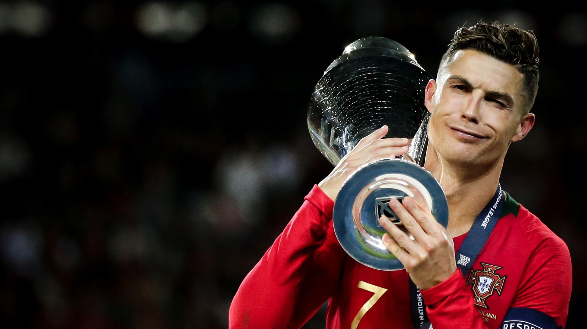

A versatile attacker, Ronaldo is capable of playing on either wing as well as through the centre of the pitch, and, while ostensibly right-footed, is very strong with both feet. He ranks among the world's fastest footballers, both with and without the ball. Tactically, Ronaldo has undergone several evolutions throughout his career. While at Sporting and during his first season at Manchester United, he was typically deployed as a traditional winger on the right side of midfield, where he regularly looked to deliver crosses into the penalty area. In this position, he was able to use his pace and acceleration, agility and technical skills to take on opponents in one-on-one situations. As age caught up to Ronaldo, he had to adapt and change his playstyle to a more central role. He dropped the tricks and became a goal-scoring machine. He perfected his off-ball movement so that he could slip by defences and score goals without having to dribble to past two to three players. Ronaldo became the perfect striker as he could score with any part of his body in any situation. As he transitioned from a winger to a striker he became lethal in front of goal and also become more efficient as seen through his goal per game ratio (0.9 goals per game since turning 30).

Cristiano Ronaldo was the first player to bring long-awaited international success to the Portuguese national football team. Before the days of Cristiano Ronaldo, Portugal had only qualified for a measly three World Cups and three European Championships. Alongside that, Portugal had no major international trophies to their name, even having failed to win any with their "Golden Generation" of players, a squad comprised of some of the best footballers in the world at that time. This all changed when a young Cristiano Ronaldo made his senior international debut for Portugal. Since that day in 2003, Portugal has qualified for all four World Cups and all four European Championships, furthermore, Ronaldo won the 2016 Euros with Portugal, making it the first major international trophy in their history. To top it off, Ronaldo added a second international trophy to Portugal's cabinet when they won the first-ever UEFA Nations League Trophy. While leading Portugal to success, Ronaldo also became the highest international goalscorer in history and the only player ever to score in ten consecutive international tournaments. Ronaldo's contribution to the national team has made Portugal the modern football powerhouse it is today and he continues to inspire young Portuguese footballers so that one day someone can fill his shoes.
